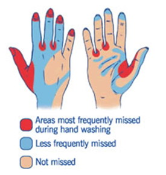

when you try to avoid face to face contact with other poeple and stay indoors as much as possible.
If your over 70 years old or have a serious health issue, it is advised!
How to wash your hands with soap and water
Wet your hands with warm water and apply soap.
Rub your hands together until the soap forms a lather.
Rub the top of your hands, between your fingers and under your fingernails.
Do this for about 20 seconds.
Rinse your hands under running water.
Dry your hands with a clean towel or paper towel
(according tho the HSE)

(according to the Cork University Hospital)
The Do's
Do remember that help and advice is only a phone-call away
Do keep your local number for vital services handy
Do keep in touch with neighbors
Do practise social distancing, keeping a space of 2 metres between you and other people
Do follow guidelines around hand washing, sneezing and coughing into your arm or a tissue
The Dont's
Don't shake hands with anyone who might come to the door
Don't let anyone into your house unless absolutely neccassary
Don't interact with vunerable members of your community if you have any symptoms of illness
Don't be alarmed by false information on social media -stick to the HSE advice